地政学
モントリオールはカナダ内のフランス語圏を世界へ開く港湾都市です。ケベック政治、連邦制度、移民、北米市場が交差し、言語政策は道路標識、学校、職場、商店の表示まで届きます。川と鉄道の結節点でもあります。

🇨🇦 カナダ / ケベック州 / World City Atlas
セントローレンス川とモン・ロワイヤルに抱かれた、フランス語圏北米の中心都市です。港湾、航空宇宙、AI、大学、移民地区、祭り、冬の暮らしが重なる大都市です。
都市の骨格
モントリオールは島の都市です。セントローレンス川の港、モン・ロワイヤルの緑、旧市街、地下鉄、移民地区、大学街が近距離で重なり、フランス語と英語の境界が日常の移動に現れます。
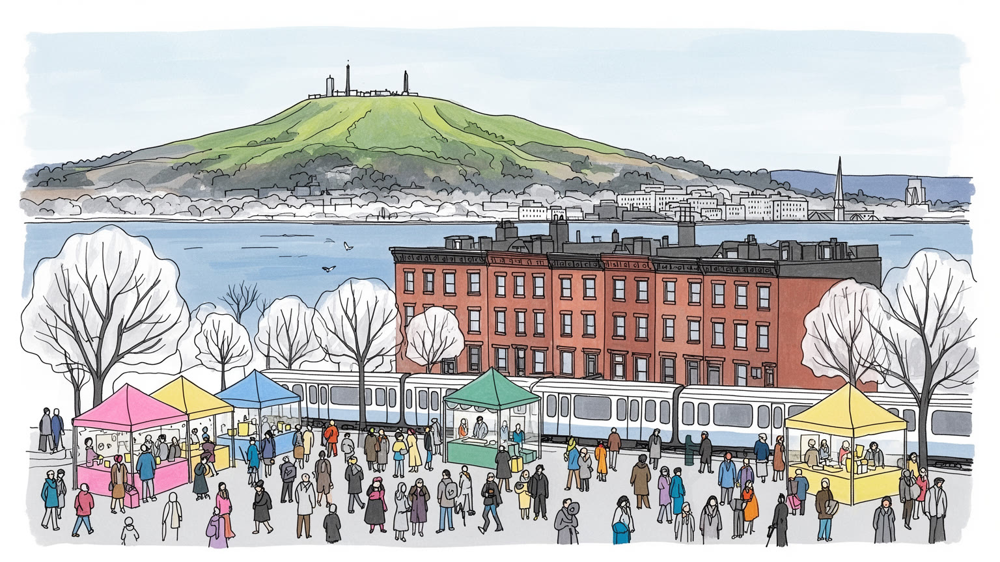
モントリオールはカナダ内のフランス語圏を世界へ開く港湾都市です。ケベック政治、連邦制度、移民、北米市場が交差し、言語政策は道路標識、学校、職場、商店の表示まで届きます。川と鉄道の結節点でもあります。
航空宇宙、AI研究、大学、ゲーム制作、港湾物流、金融、観光が重なります。専門職の集積の裏で、港湾、清掃、介護、飲食、配送、建設、除雪、市場の店番も都市を支え、言語能力や移民資格も仕事に深く関わります。
教会群、ユダヤ系の記憶、ムスリム、ハイチ系、北アフリカ系の生活が街区ごとに見えます。ジャズ、仏語ポップ、コメディ、ホッケー観戦、食の祭りが、仏語文化と移民文化を結び直しています。祈りも深く残ります。
旧市街、ノートルダム聖堂、市場、山の展望、川辺を巡れる一方、住民には雪、凍結、地下街、家賃、道路工事、学生街の夜が日常です。子どもと高齢者の移動まで含めて、観光の魅力は生活の厚みと共存しています。
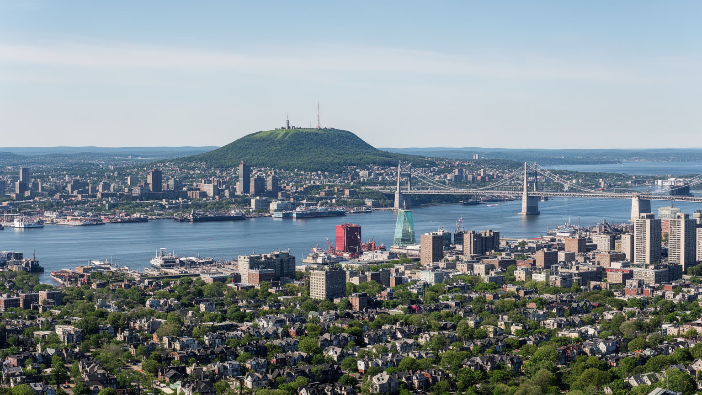
モントリオールの地理は、セントローレンス川の島と、街の中央に盛り上がるモン・ロワイヤルで理解しやすくなります。川は観光の眺めである前に、五大湖、内陸部、大西洋を結ぶ物流路であり、港、鉄道、倉庫、橋、工業地の配置を決めてきました。山は巨大な自然公園であると同時に、都市の方位をつかむ目印です。高層化の抑制、坂道、大学や病院の立地、展望台、住宅地の格差にも影響します。旧市街と港湾、中心業務地区、プラトーやマイルエンド、移民地区、郊外の住宅地は、川と山を挟んで連続します。冬にはセントローレンス川からの風、雪、凍結が歩道、橋、地下鉄の入口、除雪、物流を左右し、夏には川辺と公園が都市の居間になります。メトロの到着音、凍った坂道を踏む靴音、港の低い機械音まで含めて街の感覚が作られます。島であることは土地利用にも制約を与えます。橋やトンネルが混むと郊外との移動はすぐ遅れ、港や工業地と住宅地の距離も近くなります。川辺の再開発は散歩道を増やす一方、物流や環境負荷を見えにくくします。山と川を同時に意識すると、都市の美しさと制約が同じ地形から生まれていることが分かります。春の雪解け、豪雨、河川の水位、丘の凍った坂道は、住宅選びや公共投資の判断にも直結します。川風の冷たさを知ると、地図上の距離感も変わります。
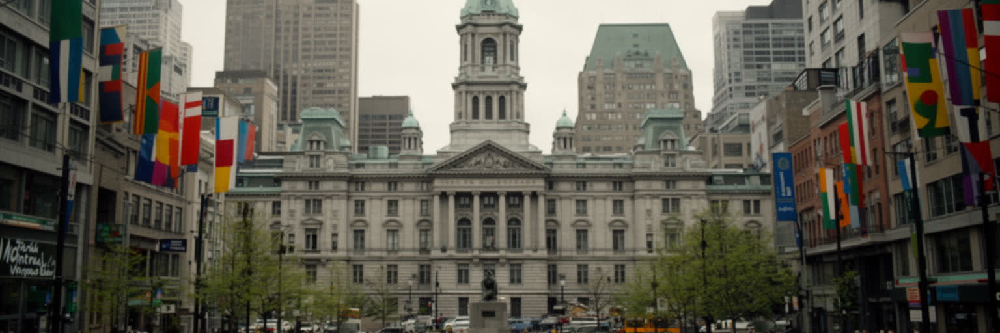
モントリオールはカナダ最大級の都市でありながら、英語圏北米の中でフランス語を日常の公共言語として保つ場所です。学校、商店表示、職場、行政、文化政策にはケベック州の言語制度が深く関わり、言語は単なる会話手段ではなく、歴史的な権利、雇用、移民統合、都市の帰属意識をめぐる政治になります。英語の大学や企業、フランス語の行政と文化、バイリンガルな若者、別の母語を持つ移民が同じ地下鉄に乗り、同じ市場や職場を使います。独立運動の記憶、連邦政府との関係、先住民との関係も、都市の自己理解に影を落とします。Radio-Canadaや地域紙、コミュニティラジオは、言語政策、住宅、移民、ホッケー、学校を日々のニュースとして結びます。新しく来た移民にとって、フランス語を学ぶことは就職と市民参加への入口ですが、英語力も国際企業や大学では強い資本になります。二言語都市は開放性の象徴であると同時に、どの言語でサービスを受け、どの学校へ進み、どの職場に入れるかを分ける現実的な制度でもあります。だから言語の議論は、文化の誇りと生活上の機会を同時に扱う必要があります。翻訳、教育、労働相談、地域メディアの質が、都市の包容力を左右します。選挙や学校区の議論も、家庭の夕食の会話まで入り込みます。放課後の子どもの言語環境にも影響します。
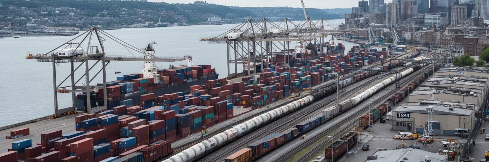
モントリオール港は、都市を単なる文化都市ではなく、北米の内陸経済と大西洋を結ぶ物流都市として位置づけます。コンテナ、穀物、燃料、建材、消費財は川と鉄道、高速道路を通じて集散し、港湾労働、倉庫、通関、トラック輸送、保守、情報管理が日々の経済を支えます。旧港は観光と再開発の顔を持ちますが、下流には現役の物流空間が広がり、景観として見えにくい仕事が都市を動かしています。港の存在は産業用地、騒音、交通、環境負荷、労使関係にも関わり、気候変動による水位や冬季運航の条件も無視できません。サプライチェーンが乱れると、遠い国の問題がモントリオールの倉庫や店頭に届きます。港湾を読むことは、レストランや祭りの背後にある貨物、倉庫、労働時間、川の管理を読むことです。都市の国際性は、空港や大学だけでなく、港で働く人の反復作業にも支えられています。物流の効率は市民生活にも直結します。食品価格、建設費、燃料供給、店舗の品ぞろえは、港と鉄道が滞ればすぐ変わります。自動化が進んでも、安全確認、修理、雪への対応、労使交渉は人の仕事です。川沿いを歩くとき、観光の背後に動くこの巨大な実務を想像できるかが、都市理解の深さを分けます。港の将来は、雇用、脱炭素、川辺の環境、近隣の健康をどう両立するかにかかっています。都市の根幹です。
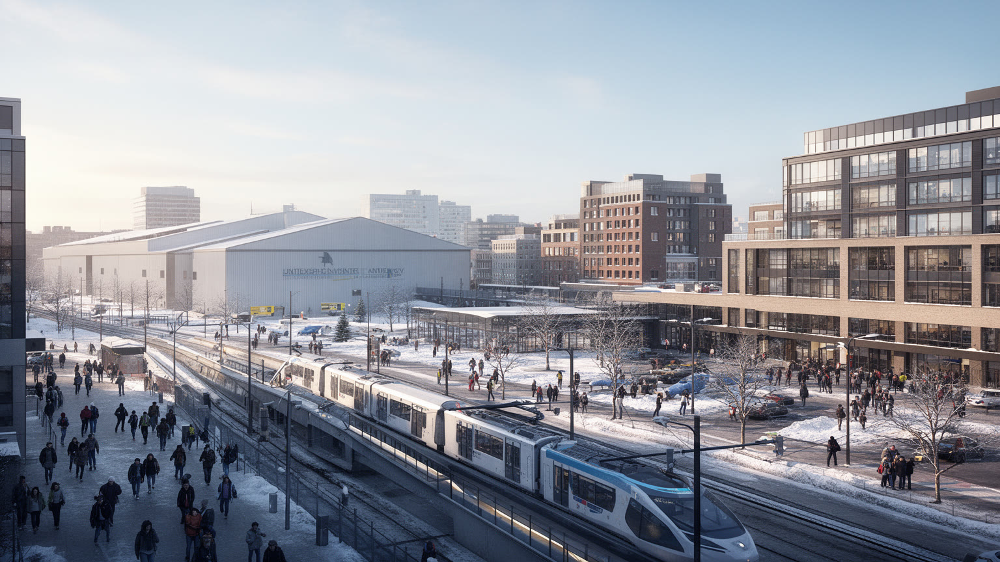
モントリオールの産業を語るとき、航空宇宙、AI、大学、ゲーム制作は互いに切り離せません。航空機、エンジン、シミュレーション、保守、部品供給の企業群があり、工学系人材と研究機関が産業の厚みを作ります。マギル大学、モントリオール大学、コンコルディア大学、UQAMなどは、研究だけでなく学生の住まい、書店、カフェ、夜のライブハウス、政治運動を街へ広げます。AI研究やゲーム産業は国際的な人材を呼びますが、住宅費の上昇、労働条件、英仏二言語の壁、移民手続きも同時に課題になります。高度産業の都市であっても、大学清掃、飲食、配送、事務、実験施設の保守がなければ日常は回りません。知識都市の強さは、研究室と工場、スタートアップと公共交通、留学生と地域社会がどれだけ接続できるかに表れます。航空宇宙は長い技能継承を必要とし、AIやゲームは変化の速い労働市場を作ります。この二つが同じ都市にあるため、安定した製造の時間と、締切に追われるデジタル制作の時間が並走します。大学都市としての魅力を保つには、研究費だけでなく、学生が住める家賃、子ども向けの科学教育、卒業後に残れる仕事、地域へ開かれた学びの場も必要です。研究成果が地域の雇用や公共サービスへ還元されるかも重要です。図書館と研究病院の開放性も、教育都市の信頼を支えます。
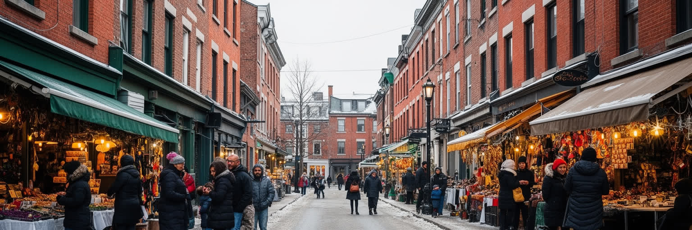
モントリオールの多文化性は、観光向けの飾りではなく、地区ごとの買い物、礼拝、学校、食卓に根を下ろしています。イタリア系の商店街、ユダヤ系の記憶、ハイチ系、北アフリカ系、レバノン系、ベトナム系、中国系、ラテンアメリカ系の住民が、フランス語と英語に別の言語を重ねてきました。ジャン・タロン市場や近隣のベーカリー、精肉店、カフェ、モスク、教会、シナゴーグ、コミュニティ施設は、移民が都市へ入る入口になります。店先の果物の匂い、冬の湯気、歩道の小さな露店、古着や携帯修理の店も路上経済を支えます。一方で、資格の認定、家賃、差別、言語習得、学校支援、医療へのアクセスは簡単ではありません。地区が人気化すれば、長く住む人や小さな店が家賃で押し出されることもあります。近隣の強さは、祭りの華やかさよりも、日々の買い物、相談、冬の助け合いに表れます。移民の子どもは学校で複数の言語を行き来し、親は職場で資格や発音の壁に直面します。宗教施設や市場は、情報交換と相互扶助の場所にもなります。多文化都市の成熟は、料理や音楽を楽しむだけでなく、住民が権利を持ち、安心して医療や教育へ届く仕組みに表れます。雪の日に入口を掃く習慣や、店で交わされる短い会話も、統計に出にくい都市の安全網です。近所の掲示板も暮らしをつなぎます。小さな信頼の積み重ねです。
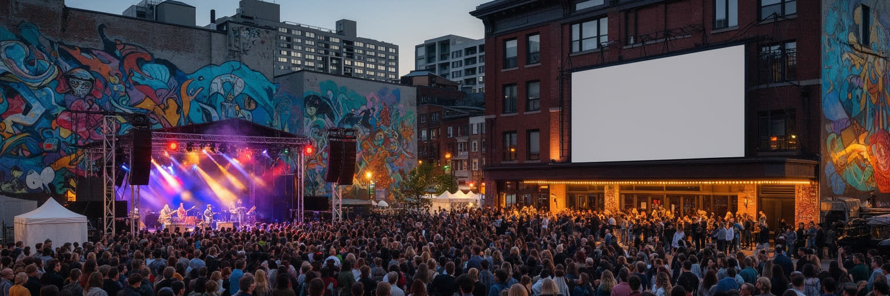
モントリオールは、冬の長さを反転させるように、夏の短い季節へ文化を集中させる都市です。国際ジャズフェスティバル、Just for Laughs、プライド、F1カナダグランプリ、映画、ダンス、電子音楽、壁画、文学の催しが広場や通りへ広がり、中心部は屋外の劇場のようになります。フランコフォン音楽のライブ、英語圏の制作、移民系のリズム、先住民アーティストの表現も都市の文化地図を広げています。祭りは観光収入を生みますが、同時に地元の制作者、音響、照明、警備、清掃、飲食、宿泊、交通の労働で成り立ちます。夜のサン・ローラン通りやカルチェ・デ・スペクタクルでは、地下鉄の音、路上のベース、バーから漏れる声が街の温度を変えます。文化が強い都市ほど、家賃上昇や短期滞在、商業化で小さな稽古場やライブ会場が失われる危険もあります。祭りは都市の自由さを示す一方、誰が騒音や混雑を負担するかも問いかけます。文化政策は言語政策とも結びつき、フランス語の舞台や出版を支える制度は都市の個性を守ります。芸術都市であり続けるには、観客を集める広場だけでなく、制作の準備をする小さな部屋や地域の会場を残す必要があります。街路の祝祭性を生活の権利と両立できるかが、文化都市としての成熟を決めます。深夜の帰路と清掃も、祝祭を支える公共サービスです。
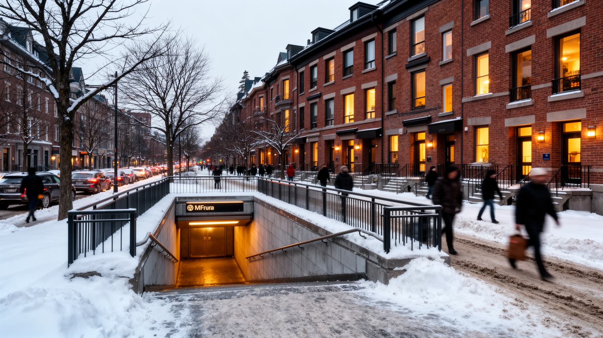
モントリオールの冬は都市の性格を決定します。積雪、凍結、低温、短い日照は、通勤、通学、除雪、道路工事、暖房費、ホームレス支援、屋外労働を具体的に変えます。地下街は観光の珍しさだけでなく、寒さと風を避けながら商業、地下鉄、オフィス、買い物を結ぶ生活インフラです。春になると道路の傷みが目立ち、夏には工事が集中し、秋には冬への準備が始まります。寒さは誰にとっても同じではありません。断熱の弱い住宅、低所得世帯、高齢者、移民の新住民、屋外で働く人、ベビーカーを押す親は、冬の負担をより強く受けます。一方で、雪祭り、スケート、Canadiensをめぐるホッケー熱、近所のリンクは、厳しい気候を都市文化へ変える力を持ちます。気候変動は暖かい冬を増やすだけでなく、凍結と融解、豪雨、熱波を複雑にします。除雪車の順番、歩道の凍結、バス停の風よけ、学校の休校判断は、生活の細部を左右します。自転車道や公園も季節で使い方が変わり、都市の公共性は一年を通して試されます。寒さを楽しむ文化と、寒さで孤立する人への支援を同時に見なければ、冬の都市は理解できません。凍った歩道を削る音や地下街の乾いた暖房の匂いも、冬を前提にした都市運営の一部です。暖かい店先の光が、帰宅する人をほっとさせます。見守りの制度も欠かせません。地域で支えます。
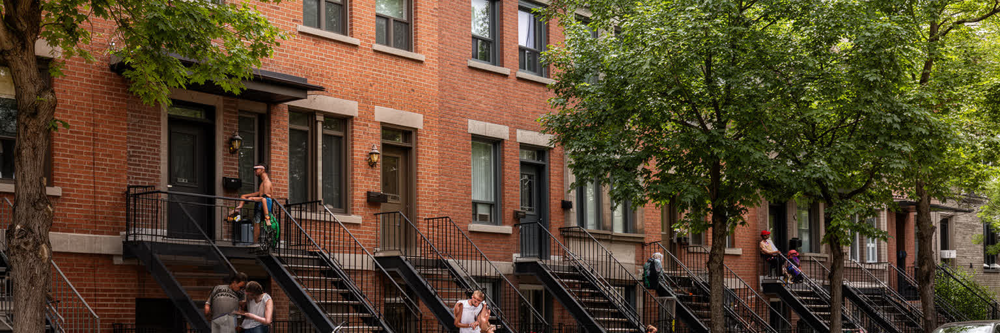
モントリオールの住宅風景を特徴づけるのは、外階段のあるトリプレックスや低層集合住宅、路地、並木、角の店です。比較的低密で歩きやすい街区は、学生、若い家族、移民、小さな飲食店、アトリエを受け入れてきました。しかし、中心部や人気地区では家賃が上がり、短期賃貸や投資、改装によって住み慣れた人が押し出される問題も目立ちます。住宅は建物の形だけでなく、学校、地下鉄、冬の除雪、保育、食料品店、医療、礼拝所へ届く距離と結びついています。英語圏やフランス語圏の学生が集中する地区では、夜の騒音や入れ替わりの速さが地域関係を変えます。子どもが歩いて学校へ行けるか、高齢者が凍った外階段を避けられるか、買い物袋を持ってメトロから帰れるかも住宅の質です。郊外へ移れば広さは得やすい一方、車への依存や長い通勤が増えます。都市の文化の多くは、手頃な家賃と近隣の密度から生まれてきました。住宅危機が進むと、芸術家、学生、移民労働者、子育て世帯が中心から離れ、街の多様性も薄くなります。古い建物の断熱改修や安全性の向上は必要ですが、改修が家賃上昇だけを招けば生活は守られません。住宅政策は景観保存、交通、福祉、文化の問題と一体です。冬の暖房費や外階段の管理も、家賃だけでは見えない生活費として重くのしかかります。近所の雪かきも共同の仕事です。
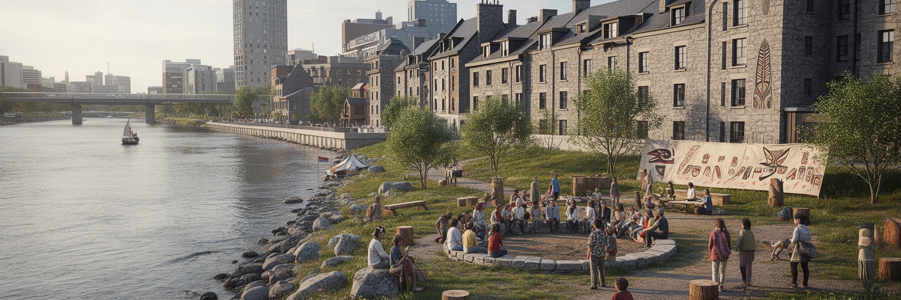
モントリオールを語るとき、フランス語と英語の関係だけでは足りません。この島は欧州植民以前から先住民の交易、移動、生活の場であり、現在もカニエンケハカをはじめとする先住民の土地と記憶をめぐる問いが続いています。旧市街の石造り、教会、植民都市の街路、交易の歴史は美しい観光資源である一方、土地の収奪、宣教、同化政策、寄宿学校、名前の上書きという痛みも含みます。都市の記念碑や博物館、大学は、誰の視点で歴史を語るかを問われています。先住民の存在を過去に閉じ込めず、現在の政治、芸術、教育、都市空間の中で見ることが重要です。和解は式典の言葉だけではなく、土地、言語、教育、医療、文化施設、展示の作り方に関わります。モントリオールの歴史を読むことは、欧州風の街並みの魅力と、その下にある先住民の記憶を同時に受け止めることです。観光案内が植民都市の始まりを強調しすぎると、それ以前の長い時間が見えなくなります。地名、川、交易路、考古資料、現代アート、抗議運動を通じて、都市は自分の物語を更新できます。過去を飾るだけでなく、現在の不平等や制度の改善へ結びつける姿勢が必要です。学校教育や公共サインで先住民の言語と歴史をどう扱うかは、記憶を共有する具体的な方法です。都市の読解は、誰が語り手になるかを問い直す作業でもあります。
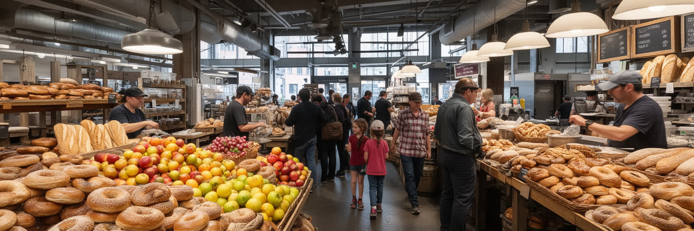
モントリオールの食文化は、フランス系の料理だけでは説明できません。薪窯のベーグル、スモークミート、プーティン、チーズ、ベーカリー、カフェ、市場の野菜、移民の家庭料理が重なり、街区ごとの生活を形作ります。ジャン・タロン市場やアトウォーター市場は観光地であると同時に、料理人、農家、輸入業者、買い物客が集まる都市の台所です。袋に入ったパンの香り、肉を切る音、冬のコートについた雪、メープルやスパイスの甘い匂いが、買い物の記憶を作ります。食は言語と宗教にも関わります。ユダヤ系の店、ハラールの精肉、北アフリカやレバノンの菓子、ハイチ料理、ベトナム料理は、移民の記憶と日常を支えます。人気店が増えるほど行列や価格上昇も起き、古い店の継承は簡単ではありません。食の豊かさは、低賃金の厨房労働、早朝の配送、移民家族の長時間営業にも支えられています。市場の周辺では、花、古本、惣菜、路上の小商いが買い物の流れを広げます。店が観光客向けに変わるほど、住民の日常食が高くなることもあります。市場と小さな食堂を守ることは、味の保存だけでなく、近隣の社会関係を守ることでもあります。冬に温かい店へ集まる時間も、都市の孤立を和らげる大切な公共性です。試合帰りの軽食も、街の夜を締めくくります。家族連れの会話も聞こえます。店は灯ります。
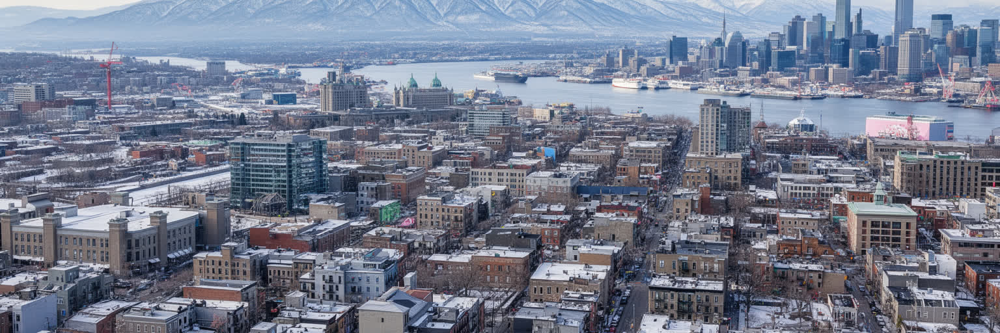
モントリオールは、ニューヨークやトロントのような英語圏北米の大都市とは違う速度で世界性を作ってきました。フランス語を公共文化の中心に置きながら、英語の大学、国際企業、移民の言語、先住民の記憶、港湾と航空宇宙の産業を重ねる都市です。旧市街の石畳、モン・ロワイヤルの公園、地下街、外階段の住宅、ジャズフェス、AI研究所、港のコンテナ、Canadiens、CF Montreal、Alouettesへの応援は別々の名所ではなく、同じ都市の緊張を示しています。魅力はヨーロッパ風の景観だけにあるのではありません。言語を守る制度、多文化の近隣、冬を前提にした都市運営、手頃な住まいをめぐる攻防、植民地の記憶を読み直す努力が、モントリオールを重要にしています。世界都市としての力は、金融規模だけでなく、異なる言語と記憶を日常の街路で調整する能力にあります。モントリオールを読むことは、北米の中で文化、産業、移民、気候、歴史がどう共存するかを見ることです。その共存は完成形ではなく、言語法、住宅政策、移民支援、大学の国際化、港湾の環境負荷、夜の安全、子どもと高齢者の移動をめぐる交渉として続きます。強い個性を持つ都市ほど、外から来る人をどう迎え、長く住む人をどう守るかが問われます。違いを消さず、街路と制度を調整し続ける点に、この都市を世界地図で読む理由があります。